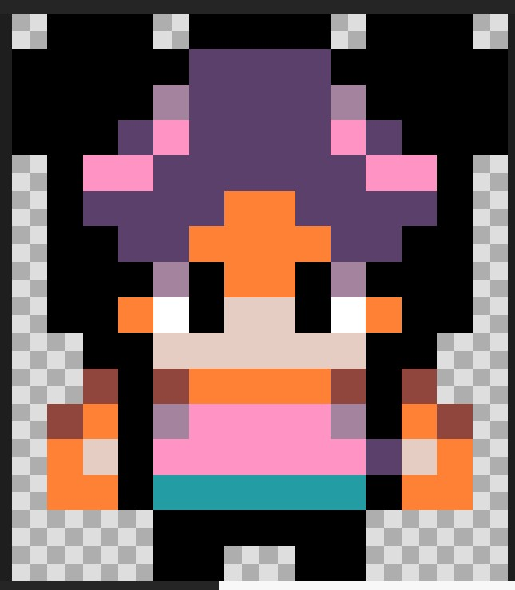
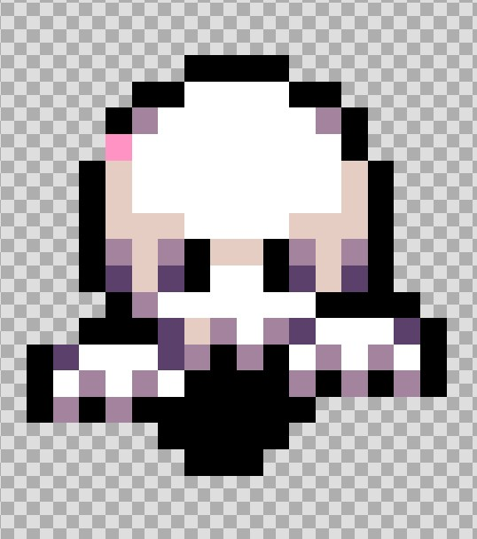

| NESKA GERLARIA |  |
Hau da gure pertsonaia nagusia. Bera arduratzen da etsaiak hiltzeaz eta sariak pilatzeaz. Gure teklatuaren botoiekin maneiatuko dugu, eta gora, behera, ezkerrera eta eskuinera joateko gai da. |
| MAMUAK |  |
Hauek dira mamuak, etsaiak dira eta euren funtzio nagusia pertsonaia nagusia hiltzea da. Jokoaren azken mailan, "A" botoia klikatuz hil ditzakegu mamuak misilekin. |
|
HURRENGORA JOAN |